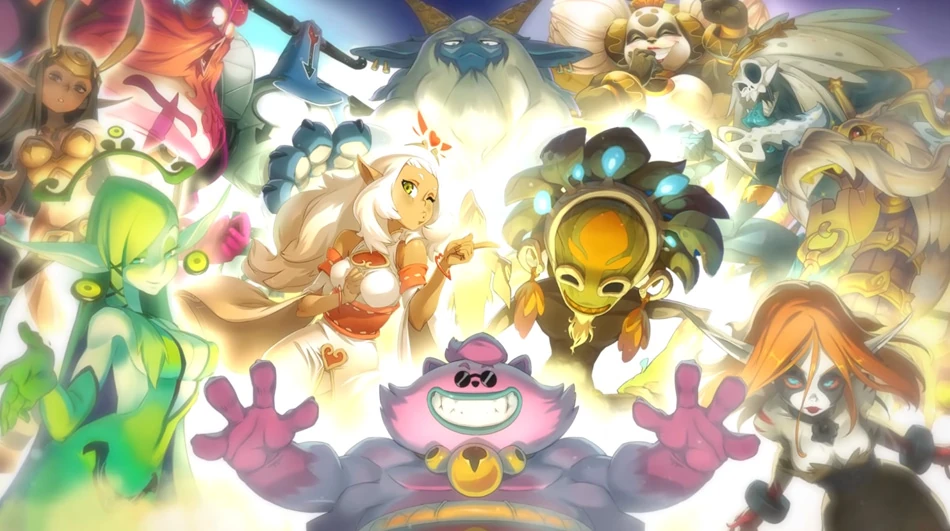
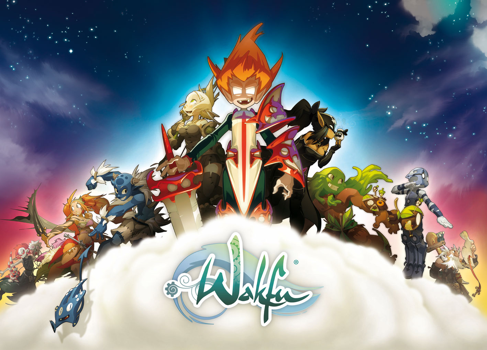
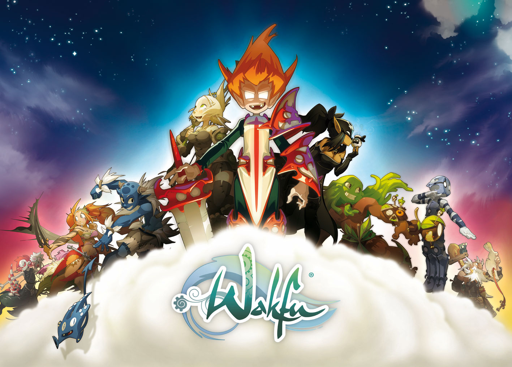

les differents jeux d'ankama sont :
Dofus
le contexte
Dofus prend place dans le Monde des Douze, un univers médiéval-fantastique. Les joueurs doivent retrouver six Dofus primordiaux, des œufs de dragons conférant une grande puissance à leur porteur, qui sont dispersés aux quatre coins du monde.
Le jeu, en monde ouvert, laisse place à la libre orientation des joueurs, pouvant choisir de s'orienter dans le Joueurs contre Joueurs, Joueurs contre Monstres ou l'économie.
Dofus est un jeu vidéo RPG où les joueurs incarnent un ou plusieurs personnages.
En tant que joueur, vous y retrouverez une multitude d'armes et d'équipements en tous genres, une vingtaine de métiers différents et plusieurs centaines de monstres répartis en différentes zones sur les 10 000 cartes de jeu (portions de carte, sur lesquelles l'on se déplace d'ailleurs comme sur une carte) formant l'univers de Dofus, dont 95 % ne sont accessibles qu'aux abonnés.
Il existe aussi diverses fonctionnalités :
- Créer de l'équipement, amélioration de ces objets ou récolte de ressources par la réalisation de métiers ;
- Battre des champions de donjons avec des mécaniques de jeu variées et des niveaux de difficultés différents ;
- Participer à des Tournois ou combats de « Kolizeum »"(Arène) contre d'autres joueurs ;
- Rencontrer de nouvelles personnes via le côté social développé du jeu (Guildes, Alliances, Groupes) ;
- Réaliser des quêtes afin de découvrir l'univers du jeu, mais aussi pour acquérir des objets inédits ou des ressources spéciales ;
- Faire des chasses aux trésors pour l'obtention de ressources spécifiques.

les classes
Il existe aussi diverses fonctionnalités :
Lors de la création de son personnage, le joueur aura le choix entre plusieurs classes, chacune ayant sa spécificité. Elles sont au nombre de 19 :
- Le Cœur d'Iop, les guerriers au corps à corps connus pour leur tempérament fonceur et leur stupidité ;
- L'étendue de Crâ, la classe d'archer infligeant de gros dégâts à distance ;
- Les Mains d'Eniripsa, des guérisseurs usant du pouvoir des mots pour aider leurs alliés ou entraver leurs adversaires ;
- Le Fouet d'Osamodas, les plus grands invocateurs du Monde des Douze, utilisant la puissance de leurs bêtes pour terrasser leurs ennemis ;
- L'ombre de Sram, des assassins capables de se rendre invisible, de poser des pièges mortels et de créer des doubles;
- Les Doigts d'Enutrof, des chasseurs de trésor par excellence, experts dans l'art de l'entrave ;
- La Pièce d'Ecaflip, des félins jouant toujours avec la chance, utilisant toutes sortes de jeux de hasard pour infliger des dégâts ;
- Le Soulier de Sadida, la classe d'invocateur utilisant la puissance de la nature et des poupées pour vaincre ses ennemis ;
- Le Sablier de Xélor, des mages du temps capables de se téléporter et utilisant des outils liés au temps lors des combats ;
- Le Bouclier de Féca, la classe de protecteurs spécialistes dans la création de boucliers magiques et de glyphes ;
- Le Sang de Sacrieur, des berserkers utilisant la douleur qu'ils reçoivent comme une force de frappe en première ligne ;
- La Chopine de Pandawa, des guerriers ivres capables de porter et lancer leurs alliés comme leurs ennemis ;
- La Ruse du Roublard, des stratèges poseurs de bombes et maniant la poudre à leur avantage ;
- Le Masque du Zobal, des guerriers protecteurs ou destructeurs, capables de s'adapter à la situation en s'équipant de masques ;
- La Vapeur du Steamer, des guerriers issus de la mer, disciples du kralamoure geant utilisant leur technologie pour invoquer des tourelles en combat ;
- Le Portail Eliotrope, des mages utilisant le Wakfu pour créer des portails leur permettant de se déplacer ou d'infliger des dégâts ;
- La Rune de l'Huppermage, des maîtres des éléments utilisant la puissance des runes pour lancer leurs sortilèges ;
- La Rage de l'Ouginak, la classe de chasseurs traquant leurs proies en les entravant avant de leur infliger le coup fatal.
- L'Héritage du Forgelance, tirant leurs pouvoirs de la "Lance Originelle", ces combattants cherchent à se forger une renommée que la mort elle-même ne saurait effacer.

les Dieux du monde des 12:
Wakfu
Wakfu se passe après Dofus : Plusieurs siècles après l'Âge des Dofus, le Monde des Douze, planète de Wakfu, subit de profonds changements.
Un ogre, prénommé Ogrest, réussit un exploit que personne n'a pu réaliser auparavant : rassembler les six Dofus primordiaux, des œufs de Dragon magiques pondus plusieurs siècles auparavant ; il les offre à sa bien-aimée, la poupée Dathura, afin de lui rendre apparence humaine.
Pour des raisons inconnues, Dathura périt en chutant dans les abîmes. Fou de douleur, Ogrest s'exile au sommet du Mont Zinit pour laisser éclater son chagrin
Le désespoir de la créature donne alors au lieu au « Chaos d'Ogrest » ; les éléments se déchaînent et les larmes magiques de la créature engloutissent la plus grande partie des terres qui sont transformées en une multitude d'îles et de presqu'îles.
 
